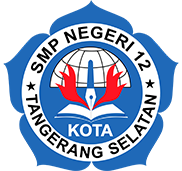
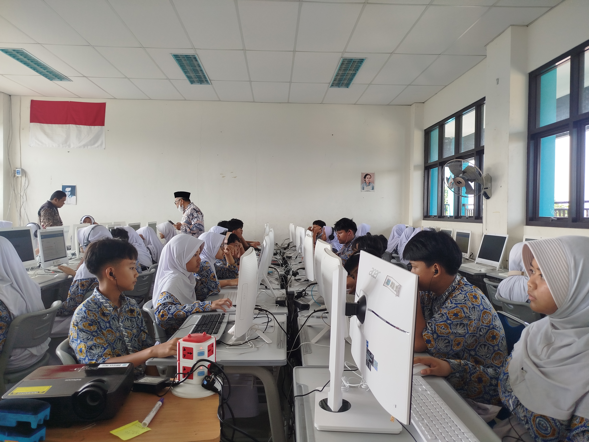
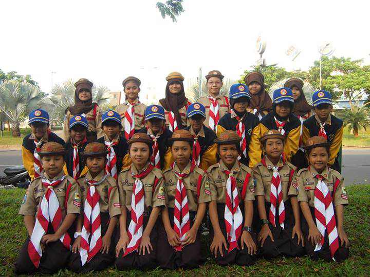
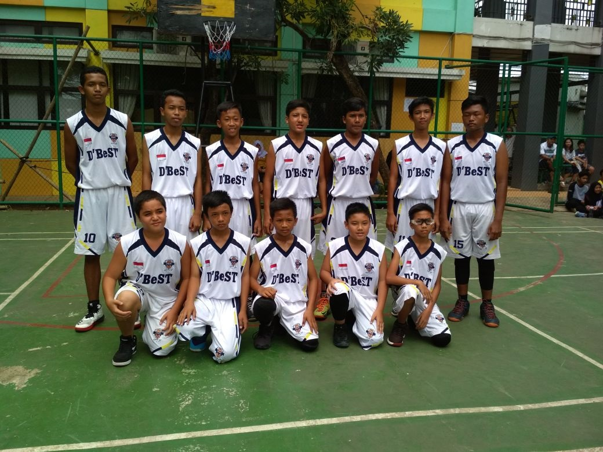
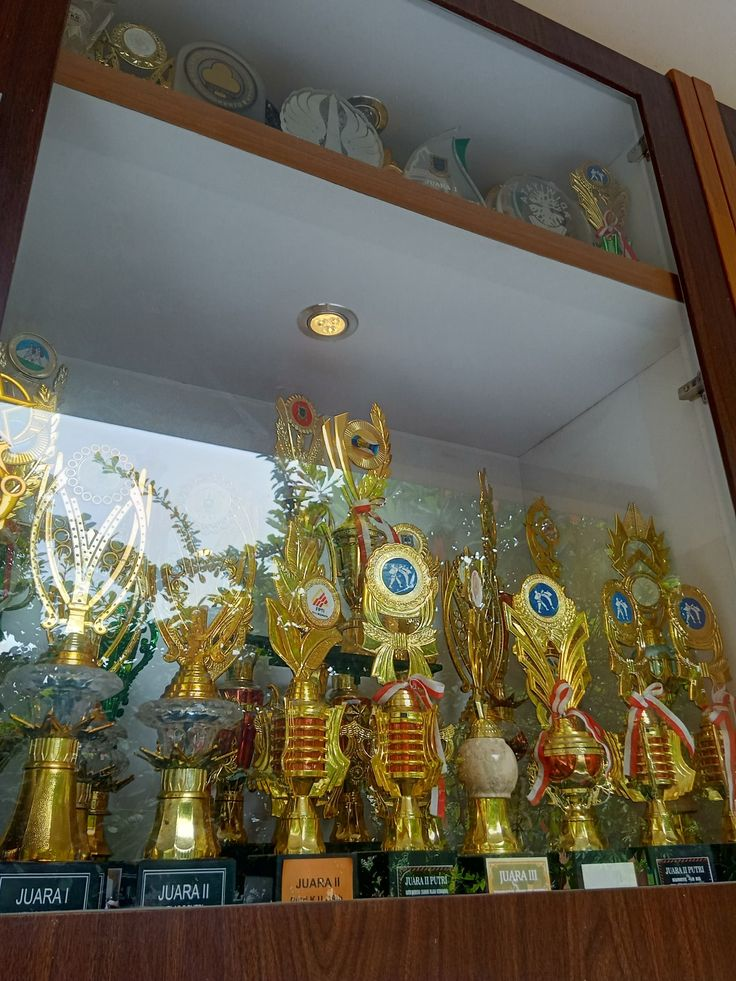
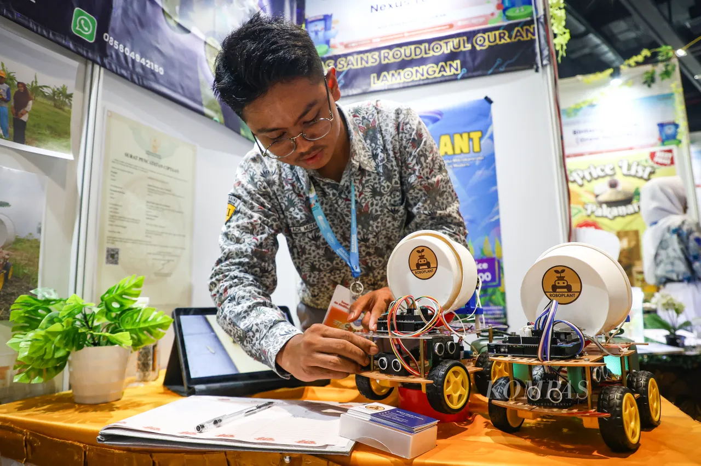

Video Profil Sekolah

Klik pada gambar di atas untuk menyaksikan video profil lengkap fasilitas dan kegiatan belajar di sekolah.

Sekolah Berhati (Bersih, Sehat, dan Indah) di Tangerang Selatan.
📍 Jl. Jurangmangu Barat No. 62, Kelurahan Jurangmangu Barat, Kecamatan Pondok Aren, Kota Tangerang Selatan, Provinsi Banten
Profil Singkat:UPTD SMP Negeri 12 Kota Tangerang Selatan (yang akrab disapa dengan julukan Snedo atau Snedu) adalah sekolah menengah pertama negeri berakreditasi A yang berlokasi di kawasan Pondok Aren. Didirikan sejak April 2001, sekolah ini memiliki komitmen kuat dalam menyeimbangkan prestasi akademik, pengembangan karakter, dan pelestarian lingkungan hidup.
Visi Sekolah:• Berfokus pada pembentukan generasi yang cerdas, inovatif, dan berakhlak mulia. Sejak awal masuk sekolah, para siswa baru ditanamkan nilai-nilai karakter kuat, salah satunya melalui pembekalan nilai-nilai kedisiplinan dan tanggung jawab khas sekolah.
Misi Sekolah:
Klik pada gambar di atas untuk menyaksikan video profil lengkap fasilitas dan kegiatan belajar di sekolah.

💻 Coding & Web ClubWadah eksplorasi pembuatan website, aplikasi, dan logika pemrograman.

🎬 PramukaPelatihan editing video, desain grafis, dan konten kreator kreatif.

⚽ BasketMenyalurkan bakat olahraga, kesehatan fisik, dan sportivitas tim.

Prestasi gemilang siswa kejuruan dalam berbagai bidang.

Hasil karya aplikasi dan inovasi digital ciptaan siswa-siswi SMK.